Engineering AAV when the search space is the problem
Four medicines that changed the last decade. Each depends on a deliberately chosen biological sequence.
A chimpanzee adenovirus, gutted and reloaded.
≈35 kb of DNA
Billions of doses. The virus is the courier, not the medicine.
The payload was written, not discovered — a spike sequence pasted into a vector backbone.
Voysey et al. (2021)
No virus at all. A sequence in a lipid droplet.
4,284 nucleotides
Designed from a published genome in days.
Uğur ŞahinBioNTech
Özlem TüreciBioNTech
Polack et al. (2020)
Unmodified mRNA is read by the innate immune system as infection. It triggers interferon, and the message is destroyed before it is translated.
N1-methylpseudouridine can reduce innate sensing and improve translation. RNA purification and delivery also shape the response.
RNA chemistry and delivery determine how much protein the cell makes.
Katalin Karikówith Drew Weissman — Nobel Prize, 2023
Polack et al. (2020)
Duchenne muscular dystrophy. One dose, intended to last.
≈5 kb cassette
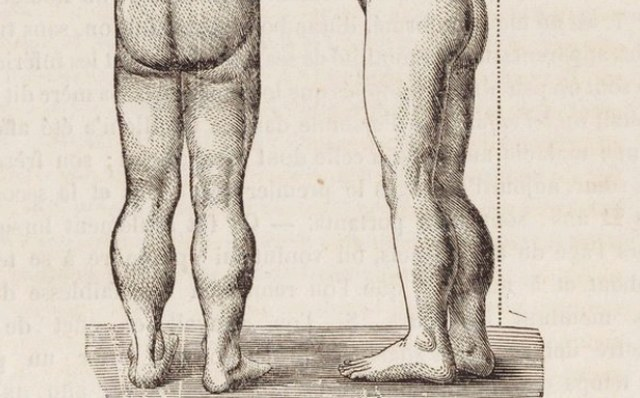
Calf pseudohypertrophy, from Duchenne’s own 1868 plates.
The courier is fixed. The cargo was redesigned.
Mendell et al. (2023)
Not a vector at all — a protein, made by cells.
≈1.4 kb of coding sequence
Jimmy CarterAnnounced metastatic melanoma in August 2015; clear scans by December
Melanoma in liver and brain, treated with surgery, radiosurgery and this antibody.
The product is a protein. The asset is the sequence.
Impact has nothing to do with length. The design problem is the same in every case.
AAV is a defective parasite of other viruses. That defect is exactly why we use it.
Drag it.
Xie et al. (2002)
Sixty identical subunits, related by the rotation group of an icosahedron.
Every axis passes through the centre. Each order is a different local environment, and they behave differently.
Xie et al. (2002)
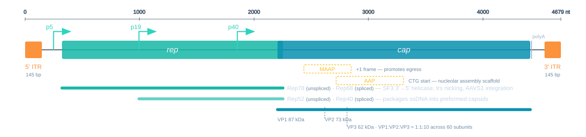
Two genes. Three promoters. Two more proteins hidden inside cap.
Samulski and Muzyczka (2014)
From p5 — Rep78, Rep68
Nick the terminal resolution site. Drive integration at AAVS1 on chromosome 19.
From p19 — Rep52, Rep40
Motor proteins. Thread the genome into a preformed capsid.
Each pair is one unspliced and one spliced product. All four are SF3 helicases, 3′→5′.
Delete rep and you delete site-specific integration.
Kotin et al. (1990)
One ORF, three start sites.
| VP1 | 87 kDa | PLA₂ + NLS |
| VP2 | 73 kDa | dispensable |
| VP3 | 62 kDa | the shell |
Roughly 1 : 1 : 10 across the 60 subunits — about five, five and fifty.
VP1 is a minority subunit, and endosomal escape depends entirely on it.
Five copies out of sixty decide whether the particle ever gets out of the endosome.
Girod et al. (2002)
AAP — assembly-activating protein
Non-canonical CTG start, nested inside cap. Scaffolds assembly in the nucleolus.
MAAP — membrane-associated accessory protein
A +1 frame inside the VP3 region. Promotes egress.
MAAP was not found by looking. It fell out of a comprehensive mutational scan in 2019.
A previously unannotated gene emerged from systematic mutational data.
AAV cannot replicate alone. It needs a helper.
Adenovirus — E1A, E1B55K, E2A, E4orf6, VA RNA
HSV-1 — UL5, UL8, UL52, UL29, UL30
For a vector this is a feature:
Replication incompetence is not a limitation. It is the product.
Samulski and Muzyczka (2014)
Good vaccine
Poor gene therapy
A vaccine wants an immune response. A gene therapy does not.
Dunbar et al. (2018)
Same fold. Same T = 1 shell. Nine variable loops on the outside.
Tropism lives on these loops.
Delete everything that makes it a virus. Keep 145 base pairs at each end.
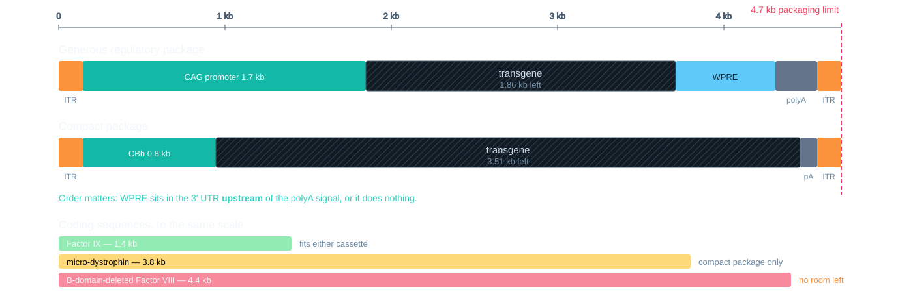
| Payload | Size | Fits? |
|---|---|---|
| Factor IX | 1.4 kb | easily |
| micro-dystrophin | 3.8 kb | compact cassette only |
| BDD Factor VIII | 4.4 kb | nothing left over |
| dystrophin | 11 kb | never |
This is why Duchenne therapy is micro-dystrophin, and why haemophilia A is harder than haemophilia B.
A physical limit on a capsid is dictating protein design.
Mendell et al. (2023)
| Product | Vector | Payload | Route |
|---|---|---|---|
| Zolgensma (2019) | AAV9 | SMN1 0.9 kb | intravenous |
| Itvisma (2025) | AAV9 | SMN1 0.9 kb | intrathecal |
| Hemgenix (2022) | AAV5 | F9 Padua 1.4 kb | intravenous |
| Kebilidi (2024) | AAV2 | DDC 1.4 kb | intraputaminal |
| Fayuvi (2026) | AAV9 | SGSH 1.5 kb | intravenous |
| Luxturna (2017) | AAV2 | RPE65 1.6 kb | subretinal |
| Elevidys (2023) | AAVrh74 | micro-dystrophin 3.8 kb | intravenous |
| Otarmeni (2026) | AAV1 × 2 | OTOF 6.0 kb | intracochlear |
Ordered by payload. Every one but the last sits well inside the 4.7 kb budget.
OTOF is 6 kb. It does not fit — so otoferlin ships as two vectors, each carrying part of the coding sequence, reconstituted inside the hair cell.
The budget did not move. The architecture did.
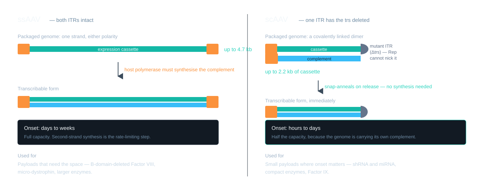
McCarty, Monahan, and Samulski (2001)
Eight steps between the syringe and a transcribing genome. Most of the dose does not survive them.
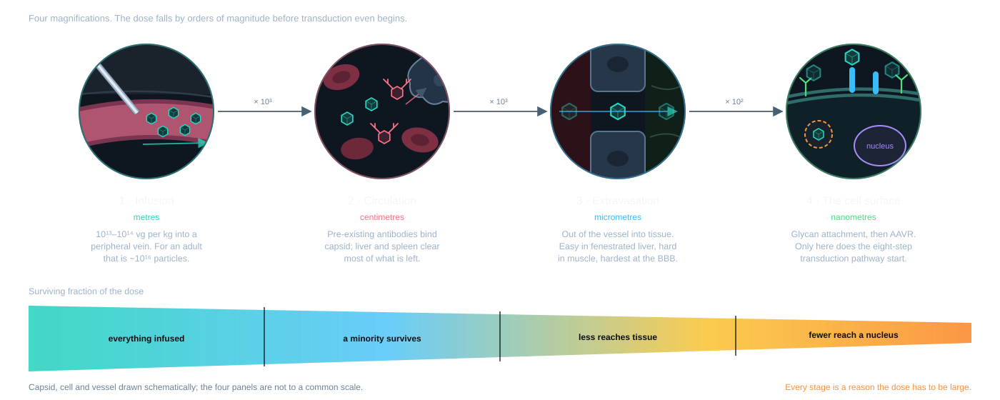
Mingozzi and High (2013)
Endosomal escape
Needs VP1u’s PLA₂ domain, externalised at low pH.
Five copies per capsid.
Second-strand synthesis
The packaged strand is transcriptionally inert until it is made double-stranded.
scAAV exists to skip this.
Potency also depends on targeting, nuclear entry, uncoating and expression.
The damage response is not evaded. MRN and ATM/ATR sense those hairpin ends.
Nakai et al. (2001)
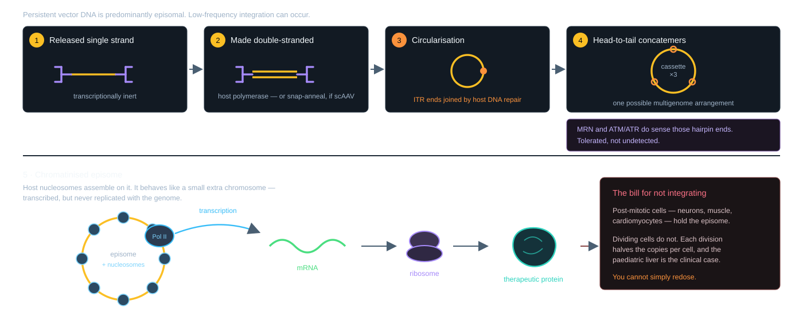
Nakai et al. (2001)
The episome is not replicated when the cell divides.
Post-mitotic — neurons, cardiomyocytes, muscle. Episomes can support durable expression, depending on the tissue and vector.
Dividing — paediatric liver is the clinical case. Hepatocytes expand out from under the vector.
This is the bill for deleting rep.
Wild-type AAV integrated at AAVS1. Recombinant vectors gave that up for safety, and took dilution in exchange.
Decades of expression is the hypothesis under test, not a result.
Nakai et al. (2001)
A dose is 10¹³–10¹⁴ genomes per kilogram. For an adult that is a bioprocess, not a bench prep.
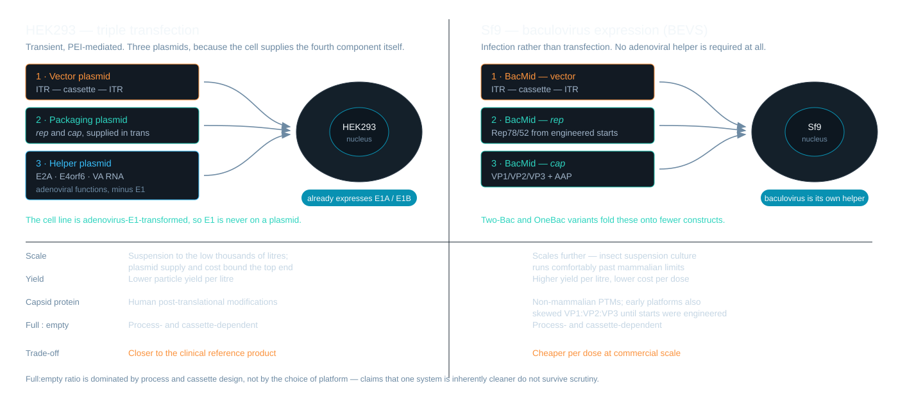
Urabe, Ding, and Kotin (2002)
The helper plasmid carries E2A, E4orf6 and VA RNA.
It does not carry E1.
HEK293 is adenovirus-E1-transformed — that is what makes it HEK293.
E1 functions come from the producer cell. The helper plasmid supplies the remaining adenoviral functions used in this platform.
Helper functions come from both the cell and the plasmid.
Urabe, Ding, and Kotin (2002)
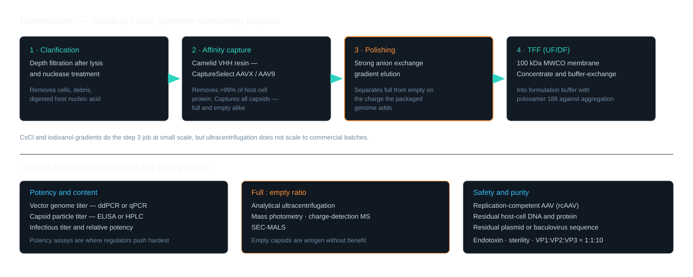
Mingozzi and High (2013)
An empty capsid delivers nothing and still:
Which is why full:empty ratio is a release-critical attribute and not a cosmetic one.
Measured by AUC, mass photometry, charge-detection MS.
Antigen without benefit.
Mingozzi and High (2013)
Efficacy rises with dose. So does toxicity. The gap between them is the whole problem.
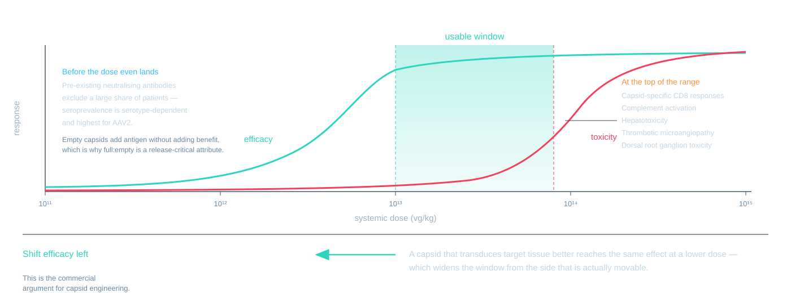
Before
Pre-existing neutralising antibodies exclude a large share of patients. Worst for AAV2.
At dose
Capsid-specific CD8 T cells clear transduced hepatocytes — expression rises, then falls.
Above dose
Complement, hepatotoxicity, thrombotic microangiopathy, dorsal root ganglion toxicity.
Unmethylated CpG can activate TLR9 and promote adaptive responses. These toxicities have multiple mechanisms.
Three parts of the cassette can be designed: the capsid, the promoter, the ITRs. Each is a different kind of search.
Capsid
Where it goes, and whether antibodies see it.
A protein-surface problem.
Promoter
Which cells express, and how much.
A regulatory-grammar problem.
ITR
Packaging, persistence, and innate sensing.
A structure-constrained problem.
VP1 is 735 residues.
A 60-residue window is 20⁶⁰ ≈ 1.15 × 10⁷⁸ — about the atom count of the observable universe. It takes 62 to exceed it.
But nobody designs the whole capsid.
A 7-mer insertion at VR-VIII is 20⁷ ≈ 1.3 × 10⁹ — and that already outruns any in vivo screen.
Romero and Arnold (2009)
Fragment the cap genes of several serotypes, reassemble, select. Every chimera is a mosaic of whichever parents crossed over.
Grimm et al. (2008)
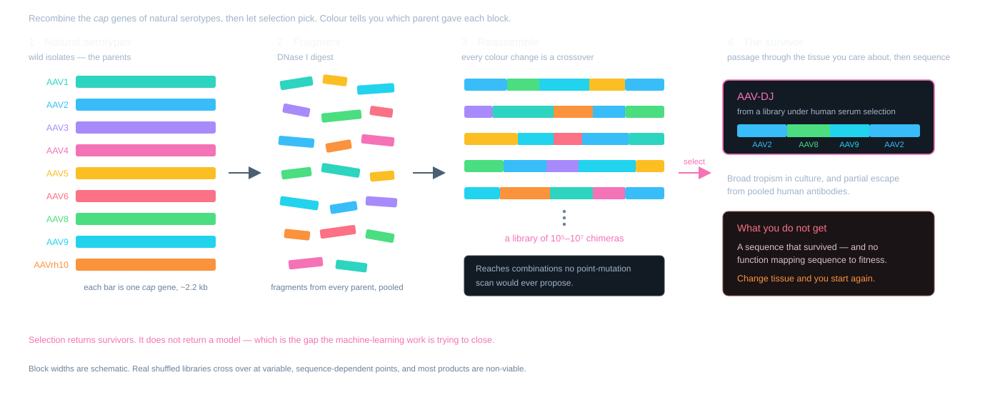
Grimm et al. (2008)
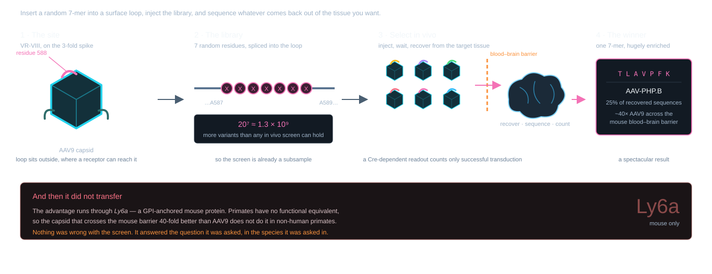
The screen was right. The model organism was the problem.
Deverman et al. (2016)
Tabular features, interpretable splits, no gradients — the baseline a sequence model has to beat.
Breiman (2001)
Fit4Function — fit one model per measurable property, on a library that uniformly samples manufacturable sequence space.
Six properties: production fitness, mouse liver transduction, and binding and transduction in each of two human liver cell lines.
Six models combined to design a liver-targeted, manufacturable library. 88% of variants met all six criteria.
No single predictor transfers. The six together do.
Eid et al. (2024)
Mikos, Chen & Suh (Rice) asked a narrower question: can you predict production fitness from structure alone?
Features describing each residue’s structural microenvironment — no measured AAV fitness used as training labels at all.
Reported threefold enrichment in mutations beating wild-type production, compared with random mutagenesis. Preprint, p = 7.5 × 10⁻¹².
Production fitness is unglamorous and gates everything — a capsid you cannot manufacture is not a capsid.
The columns you can compute before you run anything.
Mikos, Chen, and Suh (2021)
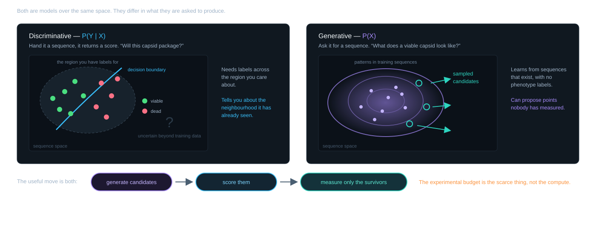
Ng and Jordan (2001)
Encoder squeezes a sequence into a few numbers.
Decoder rebuilds a sequence from them.
Training forces the middle to be a smooth, well-populated cloud — so you can sample it, and interpolate across it.
VAE — smooth latent space, easy to sample and interpolate
GAN — sharp samples, harder to train, no likelihood
Diffusion — strong sample quality, slower to generate
Autoregressive / protein language models — trained on everything nature has made, then conditioned
Good at “does this look like a real protein”, which is exactly the prior we want.
The model class matters less than the data it is fitted to.
Bryant et al. (2021)
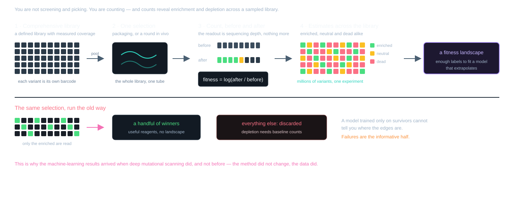
Counts before and after selection reveal both enrichment and depletion.
Ogden et al. (2019)
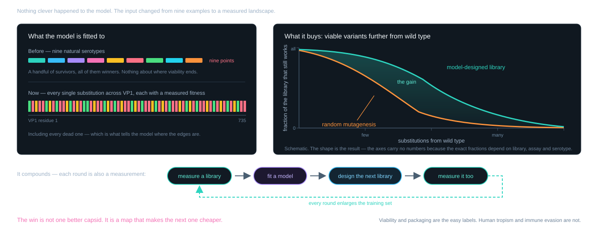
Sequence → fitness, learned rather than assumed.
The objective: express only in the target tissue, in as few bases as possible.
Every base here is a base not spent on the transgene.
Build from transcription-factor binding motifs and chromatin accessibility data rather than borrowing a viral promoter.
Why it matters beyond size:
Specificity bought with sequence instead of tropism.
Gray et al. (2011)
Michael RobertsSynpromics → AskBio → Bayer · now Chromatin Bioscience
Built promoters from screened motif libraries assembled into compact, tissue-selective elements — rather than repurposing CMV or a native regulatory region.
AMT-191 — AAV5 carrying GLA for Fabry disease, under a Synpromics liver-selective promoter.
Initial four-patient cohort: 27–208× mean normal α-Gal A activity. Sponsor report, July 2025 data cutoff.
A designed promoter, not a borrowed one.
uniQure (2025)
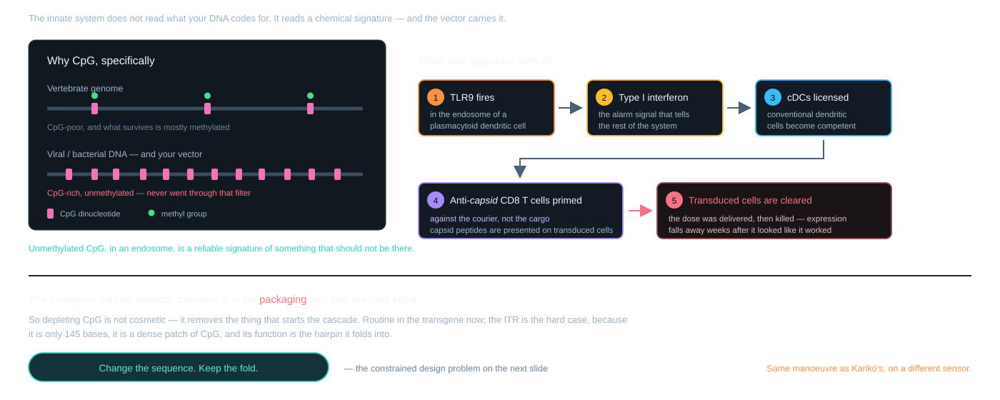
The innate signal is what turns a delivery event into an immune response.
The hardest module. The ITR must still fold into the hairpin Rep nicks.
And it is a dense patch of CpG — the motif TLR9 reads as “infection”.
145 bases, and every change is a large fraction of them.
Faust et al. (2013)
The binding constraint is the dose ceiling.
A better capsid reaches the same effect at a lower dose — below the toxicity curve, below the T cell threshold, and cheaper to make.
One objective, three problems solved.
What would actually move the field:
The biology set the constraints. What is left is a search problem.
Structures — RCSB PDB. AAV2 1LP3, AAV9 3UX1. Icosahedral assemblies expanded in-browser from the deposited asymmetric units.
Software — three.js and NGL Viewer, both MIT, vendored into this repository.
Diagrams — drawn for this deck; MIT with the rest of the source.
Portraits — via Wikimedia Commons. CC BY-SA 4.0:
Public domain: Jimmy Carter — Lauren Gerson, LBJ Presidential Library, 2014.
Plate — Duchenne de Boulogne (1868), public domain.
No photograph of an identifiable patient appears here without their own disclosure. President Carter announced his diagnosis and his treatment publicly, himself. The Duchenne figure is an 1868 engraving, not a photograph of a living child.